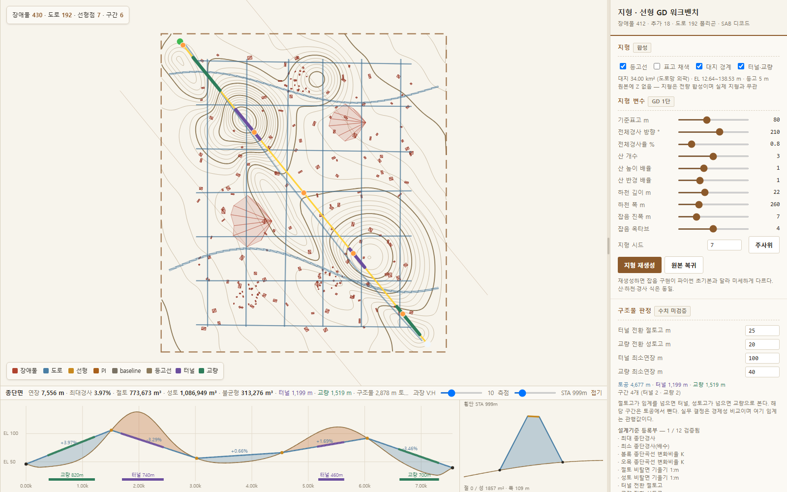
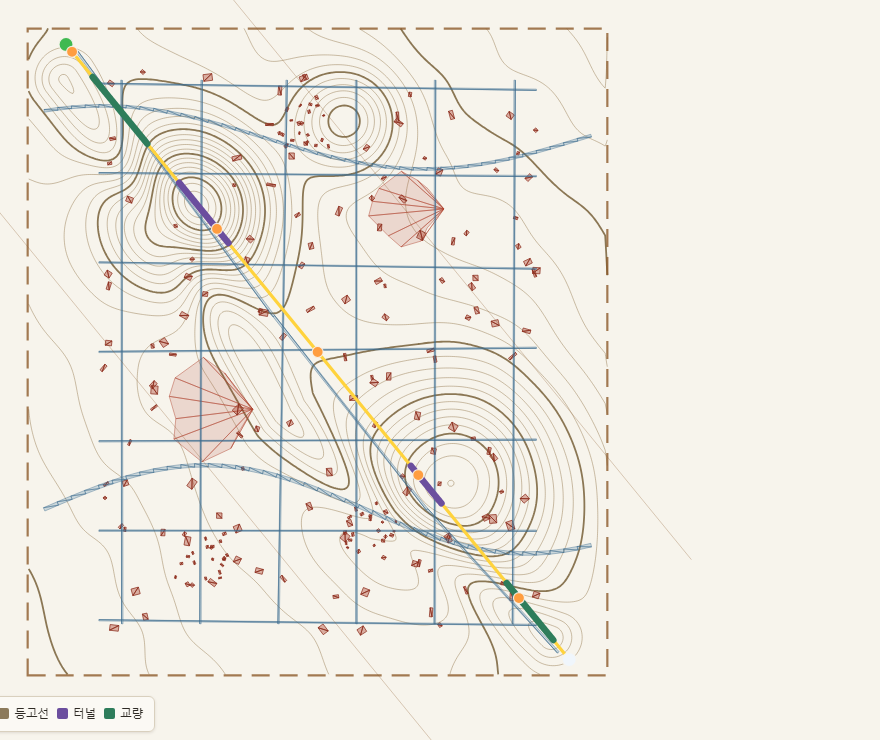
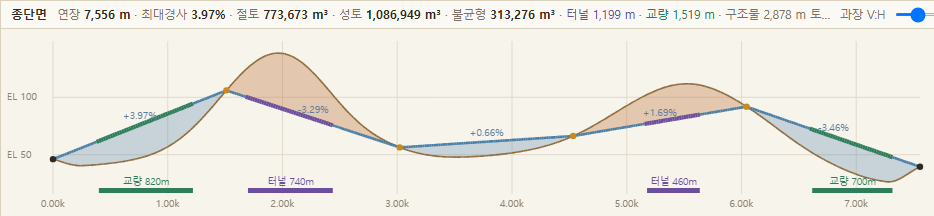
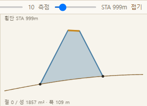
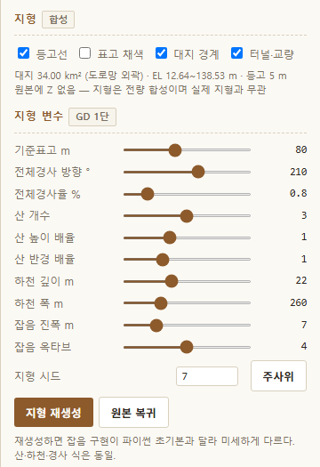
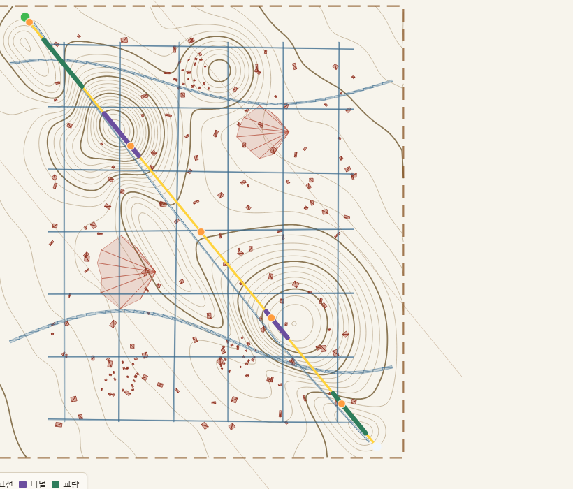
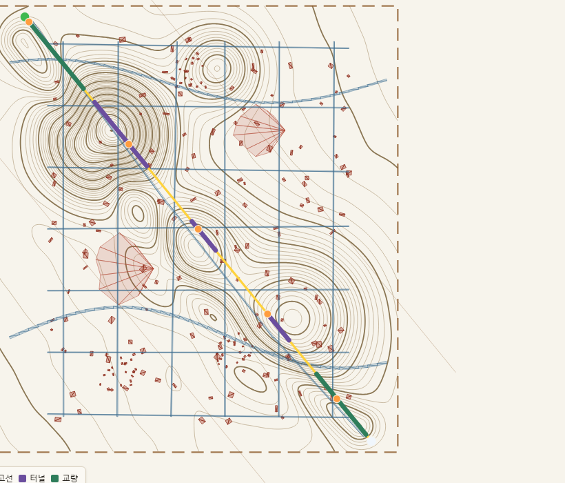
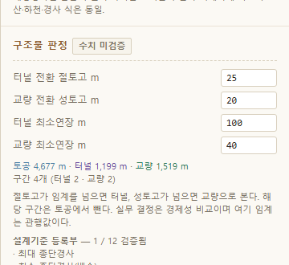
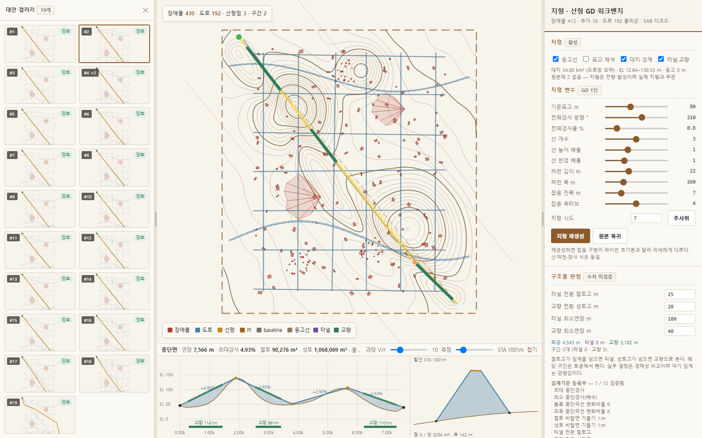

<!doctype html><html lang=ko><meta charset=utf-8><meta name=viewport content='width=device-width,initial-scale=1'><title>지형·선형 GD 워크벤치 — 설명자료</title><style>
:root{--bg:#EFEAE0;--paper:#FBF9F4;--line:#D9D0BE;--line2:#EAE3D6;--ink:#2E2A24;
      --dim:#7A7264;--acc:#8C5A2B;--acc2:#B07A3E;--bad:#B0432F;--ok:#2E7D5B}
*{box-sizing:border-box}
body{margin:0;background:var(--bg);color:var(--ink);
     font:15px/1.75 "Malgun Gothic","Segoe UI",system-ui,sans-serif}
#wrap{display:flex;min-height:100vh}
nav{width:250px;flex:none;background:var(--paper);border-right:1px solid var(--line);
    padding:20px 0;position:sticky;top:0;height:100vh;overflow-y:auto}
nav h1{font-size:14px;margin:0 20px 14px;padding-bottom:12px;border-bottom:2px solid var(--acc)}
nav h1 small{display:block;color:var(--dim);font-weight:400;font-size:11px;margin-top:4px}
nav a{display:block;padding:4px 20px;color:var(--dim);text-decoration:none;font-size:12.5px;
      border-left:3px solid transparent}
nav a:hover{color:var(--acc);background:#F3EDE2}
nav a.h1{color:var(--ink);font-weight:700;margin-top:10px;border-left-color:var(--acc)}
nav a.h3{padding-left:34px;font-size:12px}
main{flex:1;min-width:0;padding:34px 46px 90px;max-width:960px}
h1,h2,h3{line-height:1.4}
h1{font-size:25px;margin:46px 0 6px;padding-bottom:10px;border-bottom:2px solid var(--acc)}
h1:first-child{margin-top:0}
h2{font-size:18px;margin:34px 0 10px;color:var(--acc);padding-bottom:5px;
   border-bottom:1px dashed var(--line)}
h3{font-size:15px;margin:22px 0 6px}
p{margin:9px 0}
code{background:#F2EBDD;border:1px solid var(--line2);border-radius:2px;padding:1px 5px;
     font:12.5px Consolas,monospace}
pre{background:#F5F0E4;border:1px solid var(--line);border-left:3px solid var(--acc2);
    border-radius:3px;padding:12px 14px;overflow-x:auto;margin:12px 0}
pre code{background:none;border:0;padding:0;font-size:12.5px;line-height:1.6}
table{border-collapse:collapse;margin:14px 0;font-size:13.5px;width:100%}
th,td{border:1px solid var(--line);padding:6px 10px;text-align:left;vertical-align:top}
th{background:#F0E9DA;font-weight:700;color:var(--acc)}
tr:nth-child(even) td{background:#FAF7F0}
blockquote{margin:12px 0;padding:9px 14px;background:#F5EFE3;border-left:3px solid var(--acc2);
           color:#4A4238}
ul,ol{margin:9px 0;padding-left:24px}
li{margin:3px 0}
hr{border:0;border-top:1px solid var(--line);margin:30px 0}
a{color:var(--acc)}
figure{margin:16px 0;padding:0}
figure img{max-width:100%;display:block;border:1px solid var(--line);border-radius:3px;
           background:#fff;box-shadow:0 1px 4px rgba(60,50,35,.10)}
figcaption{font-size:12px;color:var(--dim);margin-top:5px}
p>img,li>img{max-width:100%;border:1px solid var(--line);border-radius:3px}
strong{color:#1F1B16}
.warnbox{background:#F8EEE9;border:1px solid #E0BFB6;border-left:3px solid var(--bad);
         border-radius:3px;padding:12px 15px;margin:16px 0}
.warnbox b{color:var(--bad)}
</style><div id=wrap><nav><h1>지형·선형 GD 워크벤치<small>v1.7 설명자료</small></h1><a class="h1" href="#USAGE-0">지형·선형 GD 워크벤치 — 사용 설명서</a>
<a class="h2" href="#USAGE-1">1. 실행</a>
<a class="h2" href="#USAGE-2">2. 화면 구성</a>
<a class="h2" href="#USAGE-3">3. 순서대로 해 보기</a>
<a class="h3" href="#USAGE-4">① 지형을 정한다</a>
<a class="h3" href="#USAGE-5">② 도로 조건을 넣는다</a>
<a class="h3" href="#USAGE-6">③ 대안을 찾는다</a>
<a class="h2" href="#USAGE-7">4. 숫자를 어떻게 읽나</a>
<a class="h2" href="#USAGE-8">5. 반드시 알고 쓸 것 (정직 고지)</a>
<a class="h2" href="#USAGE-9">6. 실제 지형을 넣으려면 (선택)</a>
<a class="h2" href="#USAGE-10">7. 잘 안 될 때</a>
<a class="h2" href="#USAGE-11">8. 파일 구조</a>
<a class="h1" href="#AI_GUIDE-0">AI_GUIDE — 이 도구를 맡게 된 AI 에게</a>
<a class="h2" href="#AI_GUIDE-1">0. 30초 요약</a>
<a class="h2" href="#AI_GUIDE-2">1. 데이터 흐름 (이 그림이 전부다)</a>
<a class="h2" href="#AI_GUIDE-3">2. 모듈별 역할과 계약</a>
<a class="h2" href="#AI_GUIDE-4">3. 절대 바꾸지 말 것 (바꾸면 조용히 틀린다)</a>
<a class="h2" href="#AI_GUIDE-5">4. 이미 밟은 함정 (같은 자리를 다시 밟지 말 것)</a>
<a class="h3" href="#AI_GUIDE-6">① 목적함수를 회피하는 값싼 길</a>
<a class="h3" href="#AI_GUIDE-7">② 유전자의 기준선을 잘못 잡음</a>
<a class="h3" href="#AI_GUIDE-8">③ 인코딩 계층</a>
<a class="h3" href="#AI_GUIDE-9">④ 스타일만 바꿔도 로직이 깨진다</a>
<a class="h2" href="#AI_GUIDE-10">5. 유전자 배치 (46차원)</a>
<a class="h2" href="#AI_GUIDE-11">6. 자주 오는 요청과 손댈 곳</a>
<a class="h2" href="#AI_GUIDE-12">7. 검증 방법</a>
<a class="h2" href="#AI_GUIDE-13">8. 사용자에게 말할 때 꼭 붙일 것</a>
<a class="h1" href="#CHANGELOG-0">변경 이력</a>
<a class="h2" href="#CHANGELOG-1">v1.7 (2026-08-25) — 배포판</a>
<a class="h2" href="#CHANGELOG-2">v1.6 (2026-08-25)</a>
<a class="h2" href="#CHANGELOG-3">v1.5 (2026-08-25)</a>
<a class="h2" href="#CHANGELOG-4">v1.4 (2026-08-25)</a>
<a class="h2" href="#CHANGELOG-5">v1.3 이전</a></nav><main><div class="warnbox"><b>먼저 알아 둘 것</b><br>
지형은 전량 <b>합성</b>이다(원본에 표고 없음) · 설계기준 수치 <b>12개 중 11개가 법령 원문 대조 전</b> ·
터널·교량은 <b>높이 임계값 판정</b>(경제성 비교 아님) · 대지는 데이터 범위 + 여유 150 m <b>사각형</b>.
그대로 설계 근거로 옮기지 말 것.</div><section id="USAGE.md"><h1 id="USAGE-0">지형·선형 GD 워크벤치 — 사용 설명서</h1>
<p>지형(등고선)을 만들고, 그 위에서 도로의 <strong>평면 + 종단</strong> 선형을 Generative Design 으로</p>
<p>찾는 도구다. 브라우저만 있으면 된다.</p>
<blockquote><strong>한 줄 요약</strong> — <code>RUN.bat</code> 더블클릭 → 우측에서 값 바꾸기 → <code>[최적화 실행]</code> → 대안 고르기.</blockquote>
<hr>
<h2 id="USAGE-1">1. 실행</h2>
<p><strong><code>RUN.bat</code> 을 더블클릭한다.</strong> 끝이다.</p>
<p><figure><figcaption>실행 직후 화면 — 왼쪽 위 평면, 아래 종단면·횡단면, 오른쪽 조작 패널</figcaption></figure></p>
<ul>
<li>파이썬·서버·인터넷 <strong>전부 불필요</strong>. 데이터가 <code>data\*.js</code> 에 구워져 있어 파일에서 바로 열린다.</li>
<li>잘 안 되면 <code>web\index.html</code> 을 브라우저로 직접 열어도 똑같다.</li>
<li>화면이 옛날 것처럼 보이면 <strong>Ctrl+F5</strong>(강력 새로고침).</li>
<li>제대로 받았는지 확인하려면 <strong><code>TEST.bat</code></strong> — 파일 8종 검사. (검사기만 파이썬을 쓴다. 없으면 파일 존재만 본다.)</li>
</ul>
<p>권장 브라우저는 Chrome 또는 Edge. <code>RUN.bat</code> 이 둘을 먼저 찾고, 없으면 기본 프로그램으로 연다.</p>
<hr>
<h2 id="USAGE-2">2. 화면 구성</h2>
<pre><code>
┌──────────────────────────────┬───────────────┐
│  평면 (지형 등고선 + 도로·장애물 + 선형)  │   우측 패널    │
│                                          │   ① 지형       │
│                                          │   ② 지형 변수  │
│                                          │   ③ 구조물 판정│
│                                          │   ④ 점 편집    │
│                                          │   ⑤ 레이어     │
│                                          │   ⑥ 선형 모델  │
│                                          │   ⑦ 설계기준   │
├──────────────────────────────┤   ⑧ 종단 설계  │
│  종단면            │  횡단면   │   ⑨ 채점·GA    │
└──────────────────────────────┴───────────────┘
</code></pre>
<p><figure><figcaption>평면 — 갈색 등고선(굵은 선이 계곡선), 갈색 점선이 대지 경계, 청색이 도로, 적갈이 장애물, 황토가 선형. 보라=터널 · 녹=교량 구간</figcaption></figure></p>
<p><strong>평면</strong> — 등고선(갈색, 굵은 선이 계곡선) · 대지 경계(갈색 점선) · 도로(청색) ·</p>
<p>장애물(적갈) · 선형(황토) · 터널(보라)·교량(녹) 구간.</p>
<p>점을 끌어 옮길 수 있고, 휠로 확대, 드래그로 이동한다.</p>
<p><figure><figcaption>종단면 — 갈색이 지반고, 청색이 계획고. 주황 채움이 절토, 청색 채움이 성토. 아래 색띠가 터널·교량 구간</figcaption></figure></p>
<p><strong>종단면</strong> — 아래 왼쪽. 지반고(갈색) · 계획고(청색) · 절토(주황 채움)·성토(청색 채움) ·</p>
<p>구간 경사 % · VIP(황색 점) · 터널/교량 색띠. 우측 위 <code>과장 V:H</code> 로 세로 과장을 조절한다.</p>
<p><figure><figcaption>횡단면 — 황토가 노면, 청색이 비탈면, 갈색이 지반선, 검은 점이 비탈끝</figcaption></figure></p>
<p><strong>횡단면</strong> — 아래 오른쪽. <code>측점</code> 슬라이더로 위치를 옮기며 그 자리의 횡단을 본다.</p>
<p>노면(황토) · 비탈면(청색) · 지반선(갈색) · 비탈끝(검은 점).</p>
<hr>
<h2 id="USAGE-3">3. 순서대로 해 보기</h2>
<h3 id="USAGE-4">① 지형을 정한다</h3>
<p><code>지형 변수</code> 에서 슬라이더를 움직이고 <strong><code>[지형 재생성]</code></strong> 을 누른다.</p>
<p><figure><figcaption>지형·지형 변수 패널 — 산 개수·높이·반경, 하천 깊이·폭, 잡음, 시드</figcaption></figure></p>
<table><thead><tr><th>변수</th><th>무엇이 바뀌나</th></tr></thead><tbody>
<tr><td>기준표고</td><td>전체 표고를 위아래로</td></tr>
<tr><td>전체경사 방향·율</td><td>대지 전체가 어느 쪽으로 기우는가</td></tr>
<tr><td><strong>산 개수 / 높이 배율 / 반경 배율</strong></td><td>산이 몇 개, 얼마나 높고 넓은가</td></tr>
<tr><td><strong>하천 깊이 / 폭</strong></td><td>골짜기가 얼마나 깊고 넓은가</td></tr>
<tr><td>잡음 진폭 / 옥타브</td><td>지형의 잔주름</td></tr>
<tr><td>지형 시드 · <code>[주사위]</code></td><td>같은 설정에서 다른 지형</td></tr>
</tbody></table>
<p>같은 부지에서 변수만 바꾼 결과다. 왼쪽이 기본(시드 7 · 산 3개), 오른쪽이 산 5개·높이 1.6배·하천 깊이 40 m.</p>
<p><figure><figcaption>기본 지형 — 시드 7 · 산 3개</figcaption></figure></p>
<p><figure><figcaption>산 5개 · 높이 1.6배 · 하천 40 m 로 재생성 — 선형이 지나는 자리도 함께 달라진다</figcaption></figure></p>
<p><code>[원본 복귀]</code> 로 처음 지형으로 되돌린다.</p>
<p>슬라이더를 움직이는 즉시 바뀌지 않고 <strong>버튼을 눌러야</strong> 다시 계산한다(격자가 12만 칸이라 무겁다).</p>
<h3 id="USAGE-5">② 도로 조건을 넣는다</h3>
<p><code>종단 설계</code> 에서:</p>
<table><thead><tr><th>입력</th><th>기본</th><th>뜻</th></tr></thead><tbody>
<tr><td>설계속도 V</td><td>60</td><td>60·80·100 중 고르면 아래 값들이 따라 바뀐다</td></tr>
<tr><td><strong>최대 종단경사 ±%</strong></td><td>8</td><td>이걸 넘으면 <strong>실격</strong>. 직접 숫자를 넣는다</td></tr>
<tr><td>최소 종단경사 %</td><td>0.3</td><td>배수를 위한 하한</td></tr>
<tr><td>종단곡선 K 볼록/오목</td><td>11 / 15</td><td>종단곡선이 이보다 완만해야 한다</td></tr>
<tr><td>도로폭 B m</td><td>20</td><td>토공 계산의 노면 폭</td></tr>
<tr><td>절토·성토 비탈면 1:m</td><td>1.2 / 1.5</td><td>비탈면 기울기</td></tr>
<tr><td>편경사 %</td><td>2</td><td>횡단의 좌우 기울기</td></tr>
<tr><td>측점 간격 m</td><td>20</td><td>종단·토공을 계산하는 간격</td></tr>
<tr><td>종단도 GD로 탐색</td><td>켬</td><td>끄면 계획고를 자동으로만 정한다</td></tr>
<tr><td>계획고 탐색폭 ±m</td><td>25</td><td>GD 가 계획고를 얼마나 흔들어 볼지</td></tr>
</tbody></table>
<p><code>구조물 판정</code> 에서 터널·교량으로 넘어가는 높이와 최소연장을 정한다.</p>
<p><figure><figcaption>구조물 판정 패널과 설계기준 등록부 — 판정 결과(토공·터널·교량 연장)와 미검증 수치 목록이 같이 나온다</figcaption></figure></p>
<h3 id="USAGE-6">③ 대안을 찾는다</h3>
<p><code>최적화 (GA)</code> 에서 Population·Generation 을 정하고 <strong><code>[최적화 실행]</code></strong>.</p>
<ul>
<li><strong>토공 벌점(점/백만 m³)</strong> — 올릴수록 토공이 큰 대안이 밀린다. 0 이면 기존 v7 총점 그대로.</li>
<li><strong>대지 이탈 벌점(점/km)</strong> — 선형이 대지 밖으로 나가는 것을 막는다. 0 으로 두면</li>
</ul>
<p>  GD 가 대지 밖으로 빠져 토공 계산을 피해 간다(실제로 겪은 일이다).</p>
<p><figure><figcaption>최적화 후 — 왼쪽 갤러리에서 대안을 고르면 평면·종단·횡단이 함께 바뀐다</figcaption></figure></p>
<p>끝나면 <code>[대안 갤러리]</code> 에서 후보를 눈으로 고른다. 카드를 누르면 평면·종단·횡단이 그 대안으로 바뀐다.</p>
<hr>
<h2 id="USAGE-7">4. 숫자를 어떻게 읽나</h2>
<p><strong>종단면 머리줄</strong></p>
<p><code>연장 · 최대경사 · 절토 · 성토 · 불균형 · 터널 · 교량 · 구조물 n m 토공 제외 · 기준 만족/위반</code></p>
<ul>
<li><strong>불균형</strong> = |절토 − 성토|. 클수록 흙을 밖에서 들여오거나 밖으로 버려야 한다.</li>
<li><strong>구조물 … 토공 제외</strong> = 터널·교량 구간이라 절성토를 계산하지 않은 연장.</li>
<li><strong>위반</strong> 이 뜨면 종단경사나 종단곡선 K 가 기준을 벗어난 것이다. 그 구간은 종단에서 <strong>빨강</strong>으로 나온다.</li>
</ul>
<p><strong>토공 계산 방식</strong> — <code>토공을 단면 스윕으로</code> 가 켜져 있으면 선형 법선 방향으로 지형을 잘라</p>
<p><strong>실제 지반 횡단형상</strong>과 계획면 사이 면적을 잰다(편측 절토·편측 성토가 잡힌다).</p>
<p>끄면 근사식 <code>A = |h|·B + m·h²</code> 를 쓴다. 둘의 차이를 비교해 볼 수 있다.</p>
<hr>
<h2 id="USAGE-8">5. 반드시 알고 쓸 것 (정직 고지)</h2>
<ol>
<li><strong>지형은 전량 합성이다.</strong> 원본 데이터에 표고(Z)가 없어서 프로그램이 만들어 낸 것이다.</li>
</ol>
<p>   <strong>실제 지형과 무관하다.</strong> 실지형을 쓰려면 §6 을 보라.</p>
<ol>
<li><strong>설계기준 수치 12개 중 11개가 법령 원문 대조 전이다.</strong> 화면의 <code>수치 n/12 검증</code> 배지가 그것이다.</li>
</ol>
<p>   최대 종단경사·종단곡선 K·비탈면 기울기는 <strong>관행값</strong>이며 그대로 설계에 쓰면 안 된다.</p>
<ol>
<li><strong>터널·교량 판정은 높이 임계값</strong>으로 한다. 실무 결정은 토공 대 구조물의 경제성 비교다.</li>
</ol>
<p>   여기 판정은 «어디쯤 구조물이 필요하겠다» 를 빠르게 보는 용도다.</p>
<ol>
<li><strong>대지는 데이터 범위 + 여유 150 m 의 사각형</strong>이다. 실제 사업 부지 경계가 아니다.</li>
<li>원본 <code>도로</code> 레이어가 도로인지 수계인지 <strong>확인되지 않았다</strong>.</li>
</ol>
<hr>
<h2 id="USAGE-9">6. 실제 지형을 넣으려면 (선택)</h2>
<p><code>import_terrain.py</code> 로 외부 지형을 <code>terrain.json</code> 으로 바꾼 뒤 <code>pack_data.py</code> 로 다시 굽는다.</p>
<p>이 두 가지만 파이썬이 필요하다.</p>
<pre><code>
python tools/import_terrain.py &lt;파일&gt; --cell 20 --interval 5
python tools/pack_data.py
</code></pre>
<p>합성 지형을 다시 만들려면 <code>python toolsuild_terrain.py</code> (지형 변수는 파일 상단 <code>PARAMS</code>).</p>
<table><thead><tr><th>형식</th><th>확장자</th><th>비고</th></tr></thead><tbody>
<tr><td>ESRI ASCII Grid</td><td><code>.asc</code> <code>.txt</code></td><td>왕복 시험 완료(값 완전 일치)</td></tr>
<tr><td>점군</td><td><code>.xyz</code> <code>.csv</code></td><td><code>x y z</code> 또는 <code>x,y,z</code>. 왕복 시험 완료</td></tr>
<tr><td>LandXML 표면</td><td><code>.xml</code></td><td>구현됨, <strong>표본 미시험</strong></td></tr>
<tr><td>DXF 등고선</td><td><code>.dxf</code></td><td>구현됨, <strong>표본 미시험</strong>. <code>ezdxf</code> 필요</td></tr>
</tbody></table>
<p>★ <strong>좌표계 변환은 하지 않는다.</strong> 파일 좌표가 대지와 같은 계라고 가정한다.</p>
<p>다르면 미리 변환해서 넣어야 한다 — 프로그램이 추측하지 않는다.</p>
<p>대지 범위 밖 점 비율을 실행 중에 알려 주므로, 0% 에 가까우면 좌표계를 의심할 것.</p>
<hr>
<h2 id="USAGE-10">7. 잘 안 될 때</h2>
<table><thead><tr><th>증상</th><th>원인·조치</th></tr></thead><tbody>
<tr><td>빈 화면 / 그림이 없다</td><td>압축을 폴더째 풀지 않았다. <code>web</code>·<code>data</code> 폴더가 나란히 있어야 한다. <code>TEST.bat</code> 실행</td></tr>
<tr><td>소스 코드가 그냥 보인다</td><td><code>.html</code> 이 편집기에 연결돼 있다. Chrome/Edge 로 직접 열 것</td></tr>
<tr><td>옛날 화면이 나온다</td><td><strong>Ctrl+F5</strong></td></tr>
<tr><td>지형 재생성이 느리다</td><td>정상. 격자 12만 칸을 다시 계산한다(수백 ms~수 초)</td></tr>
<tr><td>최적화가 멈춘 것 같다</td><td>Population×Generation 만큼 평가한다. 먼저 Pop 20 / Gen 15 로 감을 잡을 것</td></tr>
<tr><td>종단이 이상하다</td><td><code>측점 간격</code> 을 줄이면(예: 10 m) 지형을 더 촘촘히 따라간다</td></tr>
<tr><td>대안이 다 실격이다</td><td><code>최대 종단경사</code> 가 너무 빡빡하거나 지형 기복이 너무 크다. 산 높이 배율을 낮춰 볼 것</td></tr>
</tbody></table>
<hr>
<h2 id="USAGE-11">8. 파일 구조</h2>
<pre><code>
RUN.bat                 실행 (파이썬 불필요)
TEST.bat                자가검사
MANIFEST.json           파일 목록 + SHA-256
START_HERE.txt          제일 먼저 읽을 것
README.md               이 문서 — 사용 설명서
AI_GUIDE.md             AI 에게 이 도구를 설명하는 문서
CHANGELOG.md            판올림 기록
web/
  index.html            화면
  js/  terrain.js       지형 적재·샘플·등고선 경로
       terrain_gen.js   지형 생성 + marching squares
       alignment.js     평면 선형(직선·원곡선·클로소이드)
       profile.js       측점·계획고·종단곡선·경사검토·터널교량·토공
       section.js       횡단면 스윕
       design.js        평면 설계기준 검토
       score.js         채점(v7 계보 + 토공)
       ga.js            유전 알고리즘
       geom.js          격자 공간색인
       app.js           화면·상호작용
data/
  site.js/.json      대지·도로·장애물
  terrain.js/.json      지형 격자 + 등고선
  _aux.js               설계기준 등록부 등
tools/
  selfcheck.py          자가검사 본체
  pack_data.py          JSON → JS 굽기 (data/*.json → data/*.js)
  build_terrain.py      합성 지형 생성기
  import_terrain.py     외부 지형 읽기 (ASC/XYZ/LandXML/DXF)
docs/                   설계·계획 문서
serve.py                (선택) 로컬 서버 — 개발용. 실행에는 필요 없다
</code></pre></section>
<section id="AI_GUIDE.md"><h1 id="AI_GUIDE-0">AI_GUIDE — 이 도구를 맡게 된 AI 에게</h1>
<p>이 문서는 사람이 아니라 <strong>AI 조수</strong>를 위한 것이다. 사용자가 이 폴더를 열고</p>
<p>&quot;이거 고쳐 줘 / 이 기능 추가해 줘&quot; 라고 할 때, 코드를 뒤지기 전에 이것부터 읽으면</p>
<p>구조와 «건드리면 안 되는 것» 을 빨리 잡을 수 있다.</p>
<hr>
<h2 id="AI_GUIDE-1">0. 30초 요약</h2>
<ul>
<li><strong>무엇</strong> — 합성/실측 지형 위에서 도로의 <strong>평면 + 종단</strong> 선형을 GD(유전 알고리즘)로 찾는 웹 도구.</li>
<li><strong>어떻게 도나</strong> — 순수 HTML/JS. <strong>라이브러리 0개, 서버 0개, 빌드 0개.</strong> <code>web/index.html</code> 을 열면 끝.</li>
<li><strong>데이터</strong> — <code>data/*.js</code> 가 <code>window.KH_DATA</code> 에 미리 실린다(<code>file://</code> 에서 fetch 가 막히므로).</li>
<li><strong>파이썬</strong> — 워크벤치 실행에는 <strong>필요 없다.</strong> 자가검사·데이터 굽기·외부 지형 읽기에만 쓴다.</li>
<li><strong>정본</strong> — 지형은 «격자 z» 가 아니라 <strong>등고선</strong>이 정본이라는 관점으로 만들어졌다.</li>
</ul>
<hr>
<h2 id="AI_GUIDE-2">1. 데이터 흐름 (이 그림이 전부다)</h2>
<pre><code>
site.json ─┐                      원본: 대지·도로·장애물 (삼각형 목록)
              ├─► build_terrain.py ─► terrain.json ─► pack_data.py ─► data/*.js
지형 변수 ────┘   (또는 import_terrain.py 로 실측 지형)                    │
                                                                          ▼
                                                        window.KH_DATA (브라우저)
                                                                          │
   ┌──────────────────────────────────────────────────────────────────────┤
   ▼                          ▼                        ▼                  ▼
KHTerrain              KHAlign                  KHProfile           KHSection
지형 샘플·등고선        평면 선형(PI→폴리라인)     측점·계획고·토공     횡단면 스윕
   │                          │                        │                  │
   └──────────────► KHScore.evaluate(genome, ctx) ◄────┴──────────────────┘
                                  │
                                  ▼
                              KHGA.run  ── 대안 ──► app.js (화면)
</code></pre>
<p><strong>핵심</strong>: <code>KHScore.evaluate()</code> 가 모든 것을 모으는 지점이다. 새 목표를 넣고 싶으면</p>
<p>거의 항상 여기와 <code>ga.js</code> 의 <code>fit()</code>·<code>axes()</code> 두 곳만 손대면 된다.</p>
<hr>
<h2 id="AI_GUIDE-3">2. 모듈별 역할과 계약</h2>
<table><thead><tr><th>파일</th><th>전역</th><th>무엇을 책임지나</th><th>건드릴 때 주의</th></tr></thead><tbody>
<tr><td><code>terrain.js</code></td><td><code>KHTerrain</code></td><td>지형 적재·<code>sample(x,y)</code>·등고선/경계 Path2D·표고 색</td><td><strong><code>sample</code> 은 대지 밖에서 NaN 을 돌려준다.</strong> 값을 지어내지 않는 게 계약이다</td></tr>
<tr><td><code>terrain_gen.js</code></td><td><code>KHTerrain.generate</code></td><td>지형 필드 생성 + marching squares</td><td>파이썬 생성기와 «잡음» 구현이 다르다. 형상 성격만 같다</td></tr>
<tr><td><code>alignment.js</code></td><td><code>KHAlign</code></td><td>PI → 평면 폴리라인 (poly/arc/spiral)</td><td><code>piFrame</code> 의 식은 원본 Dynamo v7 GD01 과 <strong>문자 그대로 같아야 한다</strong>. 바꾸면 계보가 끊긴다</td></tr>
<tr><td><code>profile.js</code></td><td><code>KHProfile</code></td><td>측점·지반고·계획고(VIP+포물선)·경사검토·터널교량·토공</td><td>아래 §4 의 «기준선» 함정을 반드시 읽을 것</td></tr>
<tr><td><code>section.js</code></td><td><code>KHSection</code></td><td>횡단면 생성·스윕 체적</td><td>지반선을 선형 <strong>법선</strong> 방향으로 샘플한다</td></tr>
<tr><td><code>design.js</code></td><td><code>KHDesign</code></td><td>평면 설계기준(최소반경·완화곡선)</td><td>수치는 <code>data/standards_registry.json</code> 과 이중관리되지 않게</td></tr>
<tr><td><code>score.js</code></td><td><code>KHScore</code></td><td>v7 채점 + 종단·토공 부착</td><td><strong><code>m.score</code> 는 v7 계보다. 값을 바꾸지 말 것</strong> (§3)</td></tr>
<tr><td><code>ga.js</code></td><td><code>KHGA</code></td><td>유전 알고리즘 · 파레토</td><td>유전자 46차원. 배치는 §5</td></tr>
<tr><td><code>geom.js</code></td><td><code>KHGeom</code></td><td>폴리곤 격자 색인</td><td>성능용. 로직 없음</td></tr>
<tr><td><code>app.js</code></td><td>—</td><td>화면·상호작용·렌더</td><td>1,600줄. 대부분의 «보이는 것» 은 여기</td></tr>
</tbody></table>
<hr>
<h2 id="AI_GUIDE-4">3. 절대 바꾸지 말 것 (바꾸면 조용히 틀린다)</h2>
<ol>
<li><strong><code>m.score</code> 는 원본 Dynamo v7 GD05 총점의 이식이다.</strong></li>
</ol>
<p>   새 목적을 점수에 섞지 말 것. 대신 <code>ga.js</code> 의 <code>fit()</code> 에서 «고르는 기준» 만 바꾼다.</p>
<p>   그래야 v7 과 비교가 계속 가능하다.</p>
<ol>
<li><strong><code>KHTerrain.sample()</code> 은 대지 밖에서 NaN 이다.</strong></li>
</ol>
<p>   편하다고 0 이나 최근접값을 돌려주게 고치면, 종단이 «지형이 없는 구간» 을 조용히</p>
<p>   토공에 포함시켜 버린다. 최근접 대체가 필요하면 <code>sampleOrNearest()</code> 를 따로 쓰고</p>
<p>   <code>outside[]</code> 로 표시한다.</p>
<ol>
<li><strong>연장 회계를 한 칸에 몰지 말 것.</strong></li>
</ol>
<p>   <code>outsideLen</code>(지형 없음)과 <code>structLen</code>(터널·교량)은 분리돼 있다. 한 번 합쳤다가</p>
<p>   화면이 «대지 밖 1,000 m» 라고 거짓말을 했다.</p>
<ol>
<li><strong><code>.bat</code> 은 순수 ASCII + CRLF.</strong></li>
</ol>
<p>   cmd 가 OEM 코드페이지(949)로 읽어서 한글이 명령으로 파싱된다. <code>chcp 65001</code> 로도 안 막힌다.</p>
<p>   한글 메시지가 필요하면 파이썬 쪽에 둔다.</p>
<ol>
<li>**<code>data/*.js</code> 는 자동 생성물이다.** 고치려면 <code>data/*.json</code> 을 고치고 <code>pack_data.py</code> 를 다시 돌린다.</li>
</ol>
<hr>
<h2 id="AI_GUIDE-5">4. 이미 밟은 함정 (같은 자리를 다시 밟지 말 것)</h2>
<h3 id="AI_GUIDE-6">① 목적함수를 회피하는 값싼 길</h3>
<p>토공에 벌점을 걸었더니 GD 가 <strong>선형을 대지 밖으로 빼서</strong> 토공 계산 자체를 피했다.</p>
<p>8,220 m 중 6,500 m(79%)가 대지 밖. 토공 5,602 m³ 라 «성공» 처럼 보였다.</p>
<p>→ 대지 이탈 벌점을 같이 걸어 막았다.</p>
<p><strong>교훈: 목적을 추가할 때마다 «이 목표를 회피하는 값싼 길이 있는가» 를 먼저 물을 것.</strong></p>
<h3 id="AI_GUIDE-7">② 유전자의 기준선을 잘못 잡음</h3>
<p>계획고 유전자를 «지반고 대비 편차» 로 두었더니, 평면이 좋고 종단이 나쁜 개체가 이겨</p>
<p>토공이 4.8배 나빠졌다(1,083,453 vs 223,950 m³).</p>
<p>→ 기준선을 <strong>«자동산정선(지반추종+경사클램프) 대비 편차»</strong> 로 바꿨다.</p>
<p>이제 <code>dz=0</code> 이 곧 자동산정이라 <strong>GD 가 자동산정보다 나빠질 수 없다.</strong></p>
<p><strong>교훈: 유전자의 0 이 «이미 아는 좋은 해» 를 가리키게 설계할 것.</strong></p>
<h3 id="AI_GUIDE-8">③ 인코딩 계층</h3>
<ul>
<li>PS 5.1 이 BOM 없는 UTF-8 파일을 ANSI 로 읽어 한글이 깨졌다 → <code>-Encoding UTF8</code> 명시.</li>
<li>그걸 고치려고 넣은 <strong>한글 주석이 <code>.ps1</code> 자체를 깨뜨려</strong> 빈 파일이 나왔다 → 스크립트는 ASCII.</li>
</ul>
<h3 id="AI_GUIDE-9">④ 스타일만 바꿔도 로직이 깨진다</h3>
<p>다크→라이트 전환에서 갤러리 썸네일이 자체 색을 들고 있어 혼자 검게 남았고,</p>
<p>종단 헤더의 컨트롤이 화면 밖으로 밀려 사라졌다.</p>
<p><strong>교훈: 색을 바꿨으면 반드시 렌더해서 눈으로 볼 것.</strong> 코드만 보면 못 잡는다.</p>
<hr>
<h2 id="AI_GUIDE-10">5. 유전자 배치 (46차원)</h2>
<pre><code>
g[0]        activePI      PI 개수 (piMin~piMax)
g[1..10]    u[10]         PI 의 종단 위치 (구간 내 0~1)
g[11..20]   v[10]         PI 의 횡방향 오프셋 (0~1, 0.5=중앙)
g[21]       nVIP          5~12
g[22..33]   dz[12]        ★자동산정선 대비 편차 (−1..+1 → ∓zRange m)
g[34..45]   lvc[12]       종단곡선 길이 배율 (0..1 → 최소K의 1~3배)
</code></pre>
<p>초기 집단의 <strong>절반은 <code>dz=0.5</code>(편차 0), <code>lvc=0</code></strong> 으로 심는다 — 지반추종 해를 알고 있으므로.</p>
<p><strong>적합도</strong> <code>fit = m.score − 토공벌점·(토공/1e6) − 이탈벌점·(대지밖/1000)</code></p>
<p><strong>파레토 축</strong> 장애물겹침↓ · 총연장↓ · 도로점수↑ · 토공총량↓</p>
<p><strong>실격</strong> 종단경사·종단곡선 위반 → <code>m.score = 0</code>, 파레토 제외</p>
<hr>
<h2 id="AI_GUIDE-11">6. 자주 오는 요청과 손댈 곳</h2>
<table><thead><tr><th>요청</th><th>어디를</th></tr></thead><tbody>
<tr><td>목적 하나 더 (예: 곡선반경 최소화)</td><td><code>score.js evaluate</code> 에서 지표 계산 → <code>ga.js axes()</code>·<code>fit()</code></td></tr>
<tr><td>새 제약 (예: 하천 이격)</td><td><code>profile.js reviewProfile</code> 에 항목 추가 → 실격 처리는 <code>score.js</code></td></tr>
<tr><td>지형 생성 방식 변경</td><td><code>terrain_gen.js generate</code> — 식만 바꾸면 등고선은 자동으로 따라온다</td></tr>
<tr><td>실측 지형 연결</td><td><code>tools/import_terrain.py</code> 에 리더 추가 → <code>terrain.json</code> 계약만 맞추면 나머지 무변경</td></tr>
<tr><td>횡단 구성 변경(길어깨·측구)</td><td><code>section.js sectionAt</code> 의 <code>road</code>·<code>toe</code> 부분</td></tr>
<tr><td>화면 색</td><td><code>web/index.html</code> 의 <code>:root</code> 변수 + <code>app.js</code> 의 캔버스 색 리터럴 (<strong>둘 다</strong> 있다)</td></tr>
<tr><td>배포본 다시 굽기</td><td><code>tools/pack_data.py</code> → <code>TEST.bat</code> 로 확인</td></tr>
</tbody></table>
<hr>
<h2 id="AI_GUIDE-12">7. 검증 방법</h2>
<ul>
<li><strong><code>TEST.bat</code></strong> — 파일 존재·SHA-256·데이터 스키마·격자 정합·등고선·.bat 인코딩·스크립트 참조·기준 등록부</li>
<li><strong>헤드리스 확인</strong> — <code>?auto=1&amp;sync=1&amp;pop=24&amp;gens=20</code> 으로 GA 를 메인스레드에서 돌린다.</li>
</ul>
<p>  (Chrome <code>--virtual-time-budget</code> 은 워커 태스크를 진행시키지 않아 <code>sync=1</code> 이 필요하다)</p>
<ul>
<li><strong>URL 파라미터</strong> — <code>ewp</code>(토공벌점) <code>owp</code>(이탈벌점) <code>gdprof</code>(종단GD 0/1) <code>tsd</code>(지형시드)</li>
</ul>
<p>  <code>tnp</code>(산 개수) <code>tph</code>(산 높이배율) <code>trd</code>(하천 깊이) <code>tgen=1</code>(로드 후 지형 재생성) <code>gallery=1</code></p>
<ul>
<li><strong>A/B 는 반드시 수치로</strong> — «좋아졌다» 는 주장은 두 설정의 실측값을 나란히 놓고 말할 것.</li>
</ul>
<hr>
<h2 id="AI_GUIDE-13">8. 사용자에게 말할 때 꼭 붙일 것</h2>
<p>이 도구의 수치는 아직 다음 상태다. 보고서·설계 근거로 옮길 때 <strong>반드시</strong> 함께 전달한다.</p>
<ol>
<li>지형은 <strong>전량 합성</strong>이다(원본에 Z 없음). 실지형과 무관하다.</li>
<li>설계기준 수치 <strong>12개 중 11개가 법령 원문 대조 전</strong>이다(<code>data/standards_registry.json</code> 참조).</li>
<li>터널·교량은 <strong>높이 임계값 판정</strong>이며 경제성 비교가 아니다.</li>
<li>대지는 데이터 범위 + 여유 150 m <strong>사각형</strong>이며 실제 부지 경계가 아니다.</li>
<li>원본 <code>도로</code> 레이어가 도로인지 <strong>수계인지 미확인</strong>이다.</li>
<li>Dynamo 원본 그래프와의 <strong>실행값 대조는 하지 않았다</strong>(사양 이식까지만 확인).</li>
</ol></section>
<section id="CHANGELOG.md"><h1 id="CHANGELOG-0">변경 이력</h1>
<h2 id="CHANGELOG-1">v1.7 (2026-08-25) — 배포판</h2>
<ul>
<li><strong>의존성 0 실행</strong> — 데이터를 <code>data/*.js</code> 로 구워 <code>file://</code> 에서 바로 열린다. 서버·파이썬 불필요</li>
<li><code>RUN.bat</code> / <code>TEST.bat</code> (순수 ASCII·CRLF) · <code>tools/selfcheck.py</code> 8종 검사</li>
<li>사용 설명서 <code>README.md</code> · AI 인계 문서 <code>AI_GUIDE.md</code> · <code>MANIFEST.json</code>(SHA-256)</li>
<li>스타일: 다크 대시보드 → <strong>측량 제도지</strong>(크림 종이·세피아 잉크)</li>
<li>Revit 애드인 제거(소스는 별도 보관)</li>
</ul>
<h2 id="CHANGELOG-2">v1.6 (2026-08-25)</h2>
<ul>
<li>종단을 유전자에 편입(21 → 46차원). 기준선 = 자동산정선 대비 편차</li>
<li>횡단면 스윕 <code>section.js</code> — 실제 지반 횡단형상으로 토공 산정</li>
<li>설계기준 등록부 <code>standards_registry.json</code> (12항목, 검증 상태 표시)</li>
<li>외부 지형 리더 <code>import_terrain.py</code> (ASC/XYZ/LandXML/DXF)</li>
</ul>
<h2 id="CHANGELOG-3">v1.5 (2026-08-25)</h2>
<ul>
<li>지형 변수 UI + 브라우저 지형 생성(marching squares 등고선)</li>
<li>터널·교량 판정, 토공에서 제외. 연장 회계 분리(지형없음 / 구조물)</li>
</ul>
<h2 id="CHANGELOG-4">v1.4 (2026-08-25)</h2>
<ul>
<li>지형(등고선) 도입, 종단면 패널, 토공, 종단경사·종단곡선 검토</li>
<li>대지 경계 bbox 전환, 대지 이탈 벌점</li>
</ul>
<h2 id="CHANGELOG-5">v1.3 이전</h2>
<ul>
<li>도로 평면선형 GD 워크벤치(평면 전용)에서 갈라져 나옴</li>
</ul></section></main></div></html>